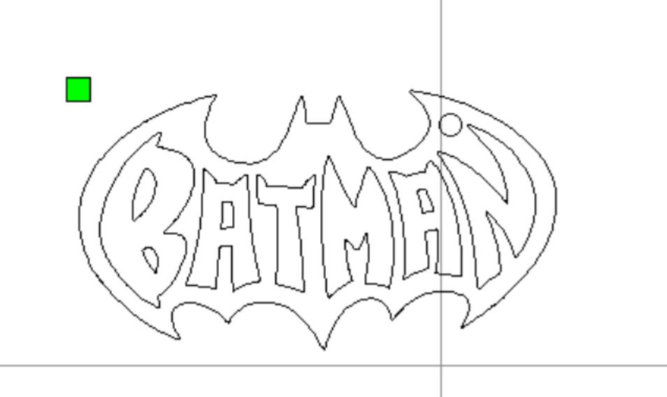
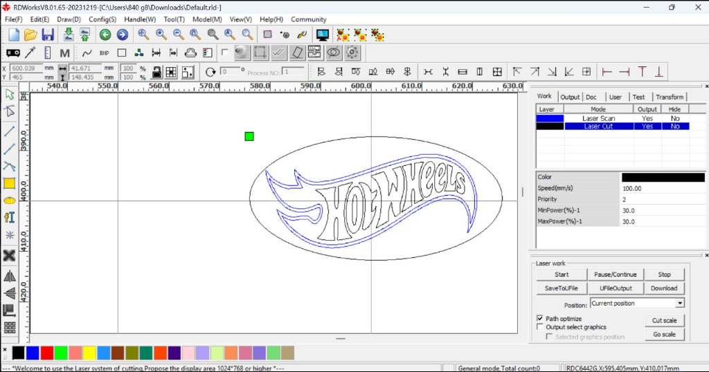
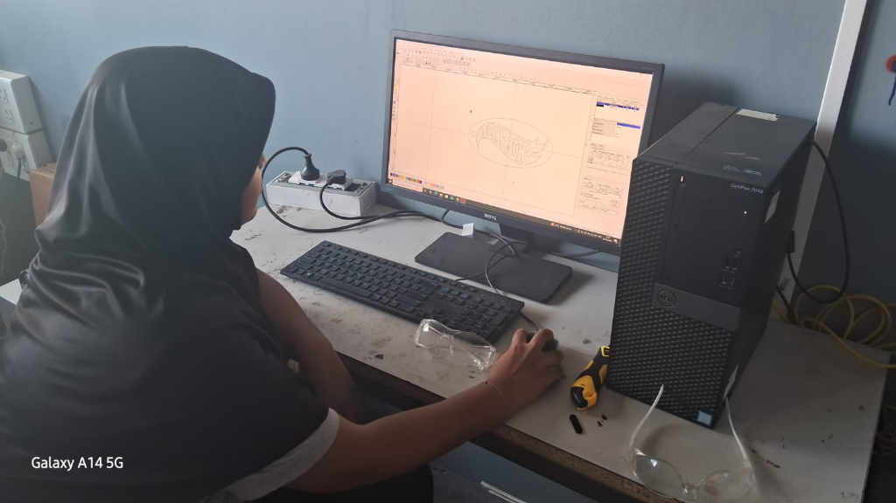
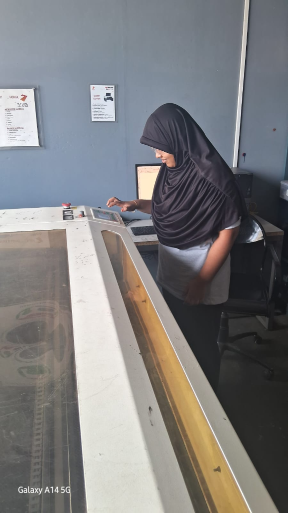

Laboratory Practical Execution
MY LASER CUTTING WORKFLOW
“Step-by-step practical fabrication journey: From image selection to RDWorks layer assignment (Cut + Scan) and physical CO₂ laser processing.”
RDWORKS PRACTICAL WORKFLOW
CUT + SCAN COMBINATION
“In RDWorks, I assigned the outer contour to CUT (through-material separation) and the internal artwork to SCAN (surface engraving).”
RDWORKS LAYER MAPPING
[ LAYER: CUT ] Magenta/Black Path → Full Separation
[ LAYER: SCAN ] Blue Infill → Surface Engraving
Independent speed & power controls per layer
Laboratory Execution Evidence
PRACTICAL EVIDENCE & LOGS



